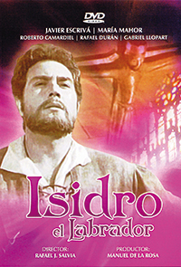

San Isidro labrador en el cineAutora: Yolanda Gallego MonederoSan Isidro también tiene su película, no podía ser de otro modo. En los años 60, el cine español pasaba un dulce momento, renovador, con producciones que se exportaban fácilmente fuera de nuestras fronteras. También se producían en España un gran número de películas italo-españolas, dentro del género western, rodadas en Almería, y que se denominaron “spagueti-western”. Actores de la talla de Clint Eastwood o Lee Van Cleef, fueron los protagonistas de este tipo de películas en las que otros actores internacionales actuaron. La censura se encargaba por estos años, de limitar bastante las escenas que se podían incluir en las películas, por lo que no fue hasta 1963, cuando se hizo público un Código de Censura, que los productores pudieron saber los criterios que hacían óptimas o no las escenas incluidas en sus films. Con este Código, el régimen franquista quería mostrarse como un régimen que se abría al mundo con una política más aperturista. Sin embargo, el cine religioso, que tuvo su máxima acogida entre el público en los años 50, gozaba aún en los años 60 del favor del Estado, que subvencionaba este tipo de películas. En esta década, se producen en España películas católicas, o relacionadas con temas católicos o morales. Sirvan como ejemplo “Rosa de Lima” (1961), “El Señor de la Salle” (1964), o “Aquella joven de blanco” (1965) En el año 1964, y bajo la dirección de Rafael Juan Salvia, Javier Escrivá y María Mahor dan vida en este film a San Isidro Labrador y Santa María de la Cabeza, esposa de nuestro venerado Santo. La película, además de mostrarnos parte de la vida de este Santo, nos enseña momentos de la historia en la Edad Media española, cuando los almorávides trataban de reconquistar el territorio que ya no les pertenecía; una época difícil, donde la religión marcaba a la gente, pero a la vez, servía de guía espiritual y consuelo. Pero no esperéis que os hagamos un resumen, tenéis que verla.
En cuanto a su director, Rafael J. Salvia, guionista, además de director de cine, se le deben guiones de películas muy conocidas, como “El día de los enamorados”, “La gran familia”, “Atraco a las tres”, “Sor Citröen”, “Un adulterio decente”, “La tonta del bote”, “Se armó el belén”, o “Don Erre que Erre”. También dirigió, entre otras, la conocidísima película de “Las chicas de la Cruz Roja”, donde aparecía una jovencísima Concha Velasco. El protagonista de esta película, Javier Escrivá, será un galán de cine de los años 60-70. Se dedicó al teatro con obras como “Julio César”, “Fuenteovejuna”, “Divinas Palabras” o “La Celestina”, aunque fue más conocido por la cantidad de películas en las que aparece. “Molokai”, “Milagro a los cobardes”, “Los muertos no perdonan”, “Don Quijote cabalga de nuevo”, “El amor empieza a medianoche”, “En la cresta de la ola”, “Adulterio a la española”, “Secretos de alcoba”, o “Los embarazados” son algunos de los títulos en los que podemos encontrarle. ¿Os suenan títulos como “Roberto el diablo”, “Camarote de lujo”, “Las legiones de Cleopatra”, “Miss Cuplé”, “Un rayo de luz”, “Siempre es domingo” o “Los hombres las prefieren viudas”? Son algunos de los filmes protagonizados por María Mahor. Comenzó su carrera profesional como actriz de teatro, y cantando en clubs. Fue proclamada “Maja de Madrid” en 1956. En la mayoría de sus papeles se le veía como una mujer cándida y un poco ingenua. A partir de 1965, cuando su físico dejó de ser tan atractivo, fue decayendo su carrera profesional, retirándose definitivamente de los escenarios en 1981. No menos importantes fueron los actores secundarios de esta película, muy conocidos en esa época, como Roberto Camardiel, Rafael Durán, Gabriel Llopart y Mariano Azaña.
Aquí os dejamos los enlaces para que podáis disfrutar vía internet, de la película: http://www.adorasi.com/cine-catolico/ isidro-el-labrador.php http://wwwapostoladoeucaristico.blogspot. com.es/2010/05/san-isidro-labradorpelicula.html |
 Revista San Isidro 2015  Revista San Isidro 2015 |
BREVE HISTORIA AGRÍCOLA Y GANADERA (2ª Parte)
En el Priorato de San Juan se tenía costumbre de prestar a los agricultores un tercio de los diezmos para la siembra.
En el Libro de Cuentas 1612-1628 folio 90 nos encontramos la siguiente reseña:
“Mas doce reales que pagó a Diego García de Siruela, vecino desta villa, ...
En el Priorato de San Juan se tenía costumbre de prestar a los agricultores un tercio de los diezmos para la siembra.
En el Libro de Cuentas 1612-1628 folio 90 nos encontramos la siguiente reseña:
“Mas doce reales que pagó a Diego García de Siruela, vecino desta villa, ...

EL HISTORIAL CAMPESINO
Fácil es señor doctor,
decir no bebas más vino
y que difícil que es
para el que nació campesino.
Yo que desde muy pequeño
dediqué mi vida entera
y en darle puse mi empeño,
rango, prestigio y solera..
Fácil es señor doctor,
decir no bebas más vino
y que difícil que es
para el que nació campesino.
Yo que desde muy pequeño
dediqué mi vida entera
y en darle puse mi empeño,
rango, prestigio y solera..
ALGUNOS MILAGROS DE SAN ISIDRO
No todos sabrán de la gran cantidad de milagros que se le atribuyen a San Isidro Labrador, muchos de ellos, post mortem. Cuatrocientos treinta y ocho milagros en total, de los cuales vamos a contar aquí los más conocidos.
No todos sabrán de la gran cantidad de milagros que se le atribuyen a San Isidro Labrador, muchos de ellos, post mortem. Cuatrocientos treinta y ocho milagros en total, de los cuales vamos a contar aquí los más conocidos.
SOLAMENTE HACE 50 AÑOS ...
Tuvo lugar una catástrofe climatológica en toda la zona de La Mancha. Un gran frente frío cruzó toda la Península dejando fuertes heladas y copiosas nevadas que hizo que durante varios días la nieve se quedara congelada sobre todos los cultivos de la zona.
En esos días, concretamente durante los días del 19 al 22 de Febrero de 1.965 ...
Tuvo lugar una catástrofe climatológica en toda la zona de La Mancha. Un gran frente frío cruzó toda la Península dejando fuertes heladas y copiosas nevadas que hizo que durante varios días la nieve se quedara congelada sobre todos los cultivos de la zona.
En esos días, concretamente durante los días del 19 al 22 de Febrero de 1.965 ...
Conoce el reglamento interno, los requisitos de acceso y pasa a formar parte de nuestra Hermandad.

| Teléfono: 654 53 82 29 (Jesús) Casa Parroquial de la Iglesia de San Francisco Plaza de San Francisco, s/n 13600 - Alcázar de San Juan (Ciudad Real) |
Síguenos en |